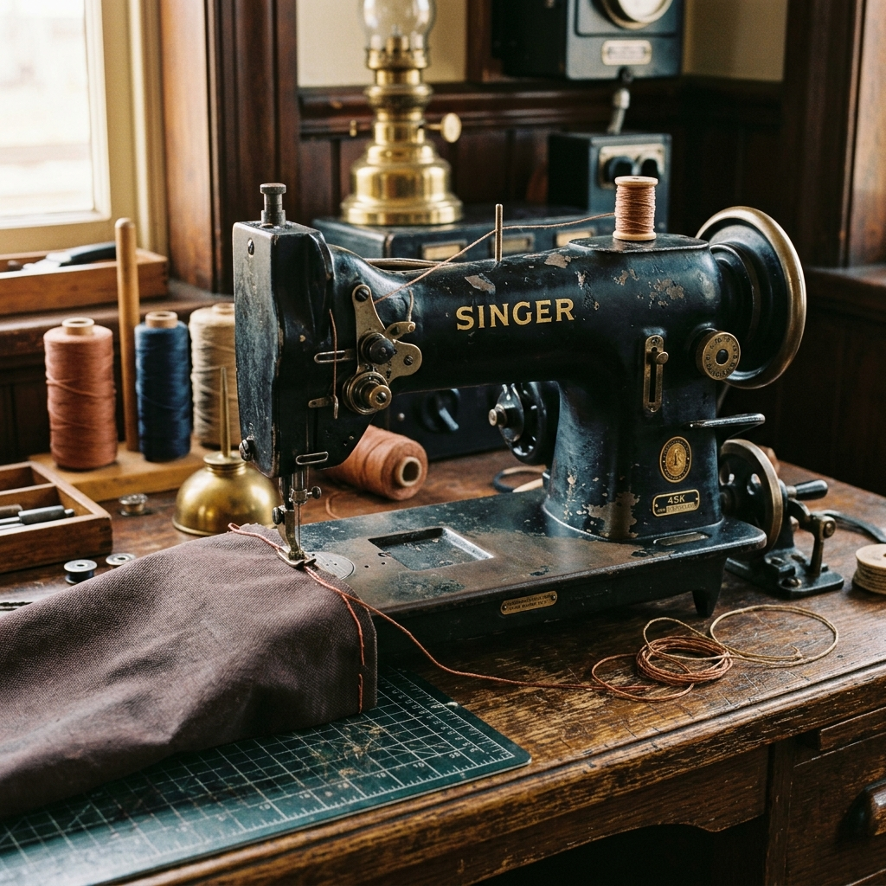

Built for the ocean, rebuilt for the next seven.
We repair cruising canvas with heavy materials and traditional methods, guaranteeing our seams for seven tough Atlantic seasons.

Repair services & pricing tiers
We believe in transparent, upfront pricing. The marine industry is notorious for hidden costs, but our loft operates on three simple tiers designed to make the cost of repair legible before you even send an enquiry. Every sail is assessed upon arrival, and if we believe it needs less work than you booked, we will always downgrade the invoice accordingly.
Bench Mend
From £38 — 7 day turnaround. The Bench Mend tier covers single, isolated issues on otherwise healthy sails. This includes a single torn seam, a blown cringle, a localized patch on a spreader chafe point, or replacing a handful of missing piston hanks. We use the same heavy materials and methods, but the work is strictly limited to the damaged area. It does not include a full seam inspection or any preventative work on the rest of the canvas.
Full Overhaul
From £180 — 14 day turnaround. This is our standard service for a tired sail before a major voyage. We strip the sail down, re-run all critical machine seams with the Ellery double-run, check the entire length of the bolt-rope for rot or core failure, and replace worn batten pocket elastic. We also apply preventative sacrificial patches to known chafe points. This tier gives you total confidence in the sail's integrity for the season ahead. It does not include complete panel replacement.
Heritage Restoration
From £460 — 6 week turnaround. A specialized tier for genuine classic working boats. We work with natural cotton and flax sails, repairing them strictly with historically accurate techniques. This includes tanbark re-dyeing using traditional methods, hand-sewing complete panels, and splicing new hemp bolt-ropes. Because of the curing time for natural dyes and the intense labor of hand-sewing heavy flax, this service requires a strict six-week minimum window and must be booked well in advance of the season.
Materials & methods
We do not compromise on the raw materials we bring into the signal box. Modern sail lofts often push lightweight, highly engineered racing cloth because it is easier to machine and faster to sew. We only stock heavy, proven, traditional canvas.
Our core stock is Dacron, held in three weights: 4.5oz for storm jibs on smaller boats, 6.5oz for standard cruising mainsails, and a heavy 8oz cloth for the working sails of heavy displacement vessels. We source our signature tanbark red canvas exclusively from Clipper Canvas, ensuring the traditional rich colour that has characterised working boats for a century. For stitching, we reject standard modern polyester thread in favour of Barbour waxed thread. The heavy wax coating protects the core from ultraviolet degradation and prevents saltwater from wicking into the seams, dramatically increasing the lifespan of the repair.
The mechanical heart of the loft is our 1954 Singer 45K walking-foot machine. It is a slow, immensely powerful piece of cast-iron engineering that punches through six layers of 8oz Dacron without hesitation. Every machine seam we run is finished with the Ellery double-run—a secondary, offset line of stitching laid over the primary seam. This method is over-engineered by modern standards, but it is the reason we confidently guarantee our seams for seven Atlantic seasons. If an Ellery seam fails within seven years under normal sailing conditions, we will repair it entirely free of charge.
Read Marta's logbookHow a sail gets home to you
You post the sail — folded loosely, not rolled — using the pre-paid Royal Mail Tracked 48 label we email you. It arrives at the signal box within two working days. Marta opens it on the long bench, photographs the damage against a metric grid, and sends you the photographs the same evening with a firm quote. Nothing is started until you reply "go".
Once approved, the sail is washed in cold rainwater from our roof tank, dried flat on the lawn behind the box, and worked on the Singer. Every machine seam gets the Ellery double-run in waxed Barbour thread on top. Bronze hanks, brass cringles and hand-worked eyelets are replaced from the tin drawer under the bench. The sail is folded into a fresh kit bag with a repair card noting what was done and what to watch, and posted back by Tracked 48. Fourteen days, door to door.
Our turnaround guarantee
When you are planning a voyage or a seasonal launch, you cannot afford to wait indefinitely for the local yard to find time for your canvas. Our fourteen-day guarantee is a firm commitment, not an estimate. Day one begins the moment you reply to our emailed quotation with your approval. If we fail to return your repaired sail within fourteen days of that approval, we will refund ten percent of the total labour invoice for every single day we are late, capped at the total value of the repair.
There are only two exceptions to this guarantee. First, it does not apply to the Heritage Restoration tier, which requires six weeks for hand-sewing and dyeing. Second, if your repair requires a highly specific, unusual cloth weight or colour that we must order in, the clock pauses while we await the supplier's delivery. We will always inform you of this before you approve the quote.
Start the clock — post your sailCoverage & shipping regions
Our postal repair model is designed to reach skippers who are moored far from commercial maritime hubs. For customers on the UK mainland, shipping both ways via Royal Mail Tracked 48 is entirely included in your repair quote. There are no hidden postage fees added at the end of the job.
We frequently work with sailors on the Scottish islands and the Isles of Scilly. For addresses in the Isles of Scilly, the Hebrides, and Shetland, we apply a modest flat surcharge of £11 to cover the extended courier costs. For customers in Ireland and the Channel Islands, the surcharge is £24, and transit times may vary slightly depending on the ferry schedules.
We do accept repairs from Northern Europe, particularly from owners of traditional gaff-rigged vessels who cannot find a local loft capable of working in heavy tanbark canvas. Because European shipping rates fluctuate heavily based on the dimensions and weight of the canvas bag, these jobs are handled strictly by custom quotation. Please email the loft with your location and sail details.
Request an international quote